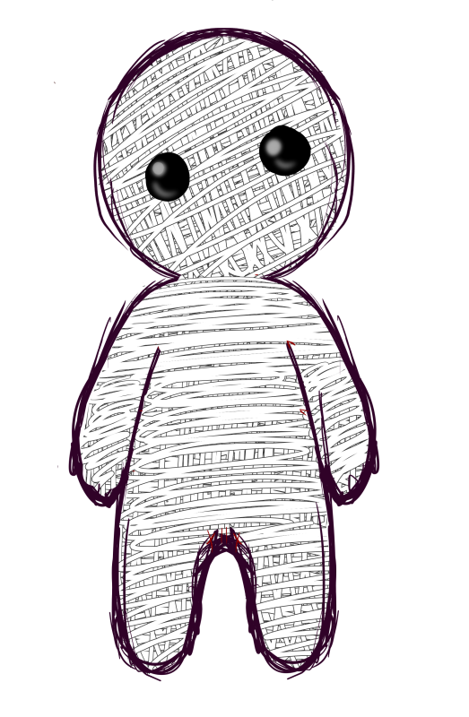

Story
Four unsuspecting, up and coming practitioners of the magic arts receive mysterious invitations to participate in a magical ceremony. A competition of wits, skill and power to determine who is the strongest witch. Upon their arrival, participants are greeted by a sinister looking woman named C’thal. C’thal introduces herself as the voodoo goddess and invites the unsuspecting bunch into her home. Once they arrive C’thal begins to rant and explain her false intentions. Soon after the door shuts closed trapping everyone inside. The house starts to become engulfed by an eerie green mist. The mist knocked everyone unconscious except C’thal. One by one, the four practitioners wake up to find themselves trapped seated around a table with four voodoo dolls in the center of it. C’thal reveals that this was a set up to pin her guests, the most powerful individuals from all the lands, against each other for survival. The winner will be set free but only to serve as a new host for her spirit. C’thals time as Voodoo Goddess is soon up and she needs a successor. She encourages the four that only one of them will walk away alive from this table and that one will become her replacement. Now locked into this game of life and death, who will walk away from the table and become the next voodoo god/goddess?
Game Flow
Players start in random positions on the platform. The main rule of the game is simple, you must end your own life. You are not allowed to inflict damage to yourself by your own hand except through special character or voodoo abilities. You must devise creative methods to reduce your own HP. Players want to be first to end their own lives. Using creative methods such as: trap doors, falling off heights, falling into spikes, drinking poison, abilities, etc. Players can devise several ways to harm themselves using these mechanics. Players can also interact with one another to delay their progression. Players can heal, prevent their opponents from taking damage or even sabotage their opponents opportunities to harm themselves by interfering using aforementioned mechanics. Players can acquire special power ups and items to assist them in their efforts. Once a player reaches 0 HP, they will have successfully achieved their own death and are ruled the winner of the round. The last man standing is the loser.